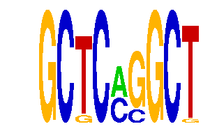

family_5 |
|---|
|  |
| Download PWM |
| Download instances (motifs) |
| Show motif distribution |
Query_ID | Query_Consensus | Subject_Name | Source_DB | Subject_ID | Length | Orientation | Offset | Divergence | Overlap | Subject_Consensus |
|---|
Sequence | Start_position (from start) | Start_position (from end) | Average conservation | Best conservation score | Instance_with_best_CS | Best_Z-score | Instance_with_best_ZS | Strand |
|---|---|---|---|---|---|---|---|---|
| chr4:134822693-134823693 | 521 | 530 | 0.00144444 | 0.004 | GCKCMGGCT | 14.39867 | GCTCMGGCT | 1 |
| chr6:86437151-86438151 | 112 | 121 | 0.0544444 | 0.065 | GCTCMGGCK | 12.710033 | GCTCMGGCK | -1 |
| chr4:128970573-128971573 | 855 | 864 | 0.998333 | 1 | GCKCMGGCT | 13.923143 | GCTCMSGCT | 1 |
| chr7:135349261-135350261 | 516 | 525 | 0.970333 | 1 | GCTCMSGCT | 15.913906 | GCKCMGGCT | 1 |
| chr4:140977485-140978485 | 884 | 893 | 0.00222222 | 0.005 | GCTCMGGCT | 12.710033 | GCTCMGGCK | 1 |
| chr4:107518583-107519583 | 529 | 538 | 0.614889 | 0.969 | GCKCMGGCT | 15.913906 | GCKCMGGCT | -1 |
| chr14:104239008-104240008 | 481 | 490 | 0.000111111 | 0.001 | GCTCMGGCK | 13.923143 | GCTCMSGCT | 1 |
| chr7:4466899-4467899 | 419 | 428 | 0.0431111 | 0.106 | GCTCMGGCK | 14.39867 | GCTCMGGCT | 1 |
| chr1:174433921-174434921 | 968 | 977 | 0.0173333 | 0.026 | GCTCMSGCT | 13.923143 | GCTCMSGCT | 1 |
| chr16:38362422-38363422 | 25 | 34 | 0.00722222 | 0.025 | GCTCMGGCT | 12.710033 | GCTCMGGCK | -1 |
| chr11:114026936-114027936 | 247 | 256 | 0.695111 | 1 | GCKCMGGCT | 15.913906 | GCKCMGGCT | 1 |
| chr4:134730734-134731734 | 648 | 657 | 0.996444 | 1 | GCTCMGGCK | 13.923143 | GCTCMSGCT | -1 |
| chr11:87823192-87824192 | 411 | 420 | 0.992889 | 1 | GCKCMGGCT | 13.923143 | GCTCMSGCT | -1 |
| chr2:4838412-4839412 | 476 | 485 | 0.00822222 | 0.062 | GCTCMGGCK | 14.39867 | GCTCMGGCT | 1 |
| chr14:104864768-104865768 | 393 | 402 | 0.996222 | 1 | GCTCMGGCK | 13.923143 | GCTCMSGCT | 1 |
| chr11:107371381-107372381 | 665 | 674 | 0.0744444 | 0.082 | GCTCMGGCK | 13.923143 | GCTCMSGCT | 1 |